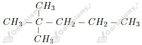

2,2-dimetylobutan
2,2-dimetylobutana) Kolejność zgodnie z rosnącą temperaturą wrzenia:
wyjaśnienie: Wraz z wydłużaniem łańcucha węglowego alkanów wzrasta ich temperatura wrzenia.
b) Kolejność zgodnie z rosnącą lotnością:
wyjaśnienie: Wraz z wydłużaniem łańcucha węglowego alkanów maleje ich lotność.
Zaczynamy od ustalenia stosunku liczbowego, w oparciu o stosunek masowy, atomów w tym związku i wyprowadzenia wzoru empirycznego CxHy. Masa molowa węgla to 12 g/mol, zaś wodoru 1 g/mol.
Wzór empiryczny tego związku to C2H5.
Wyznaczamy wzór rzeczywisty:
Wzór empiryczny tego związku to C2H5, a jego wzór rzeczywisty to C4H10.
a)
b)
c)
d)
e)
f)
Zapisujemy równanie tej reakcji:
Z równania reakcji wynika, że stosunek otrzymanego tlenku węgla(IV) do wody wynosi 5:6. Masa molowa wody to 18 g/mol, zaś jeden mol CO2 w warunkach normalnych zajmuje 22,4 dm3.
Odpowiedź: Objętość powstałego tlenku węgla(IV) to 5,6 dm3.
a)
n-pentan
2-metylobutan
2,2-dimetylopropan
b)
n-heksan
2-metylopentan
3-metylopentan
2,3-dimetylobutan
2,2-dimetylobutan
Homologiem butanu jest CH3-CH2-CH2-CH2-CH3 (ponieważ spełnia ten sam wzór ogólny CnH2n+n i różni się ilością grup CH2 w łańcuchu).
Izomerem butanu jest (zawiera tę samą ilość atomów węgla i wodoru w cząsteczce co butan, jednak różni się ich położeniem).
a) 2-metylopropan
b) 2,2,4-trimetylopentan
c) 3,5,5-trimetylooktan
d) 2,2,4,4-tetrametyloheksan
e) 2,2-dimetylopropan
f) 2,2-dimetylobutan
Wskazówka:
Ponumerowany łańcuch główny dla podpunktu c)
a)

b)
c)
d)
e)
f)
g)
h)
i)